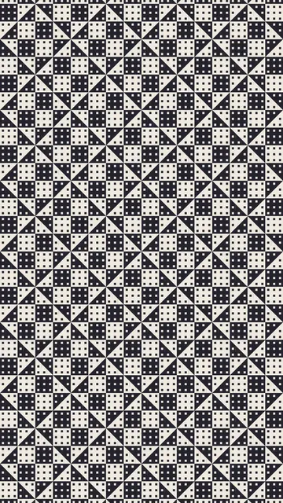
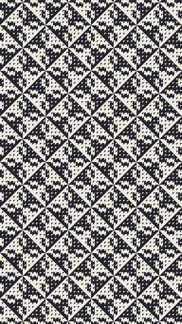
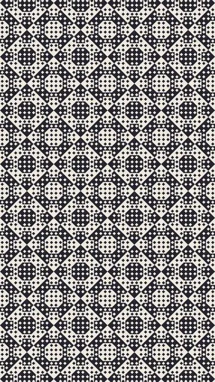
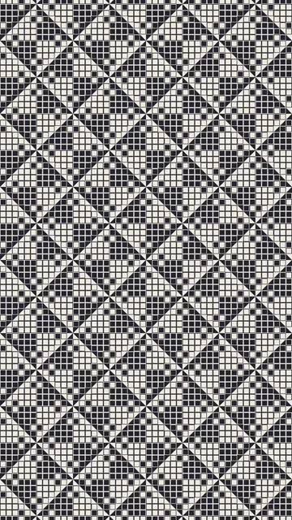

Colección PCA12

Otros idiomas: Français · English · ไทย · 简体中文 · Русский · Português · हिन्दी
Grupo 5 de 6 · 4 animaciones
Polígonos que se leen por la parte de la casilla que cubren. Nada se carga antes de un clic, y solo se reproduce una animación a la vez. Puede previsualizar cada animación a otra velocidad o en otros colores.



